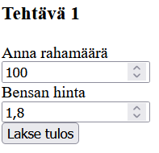
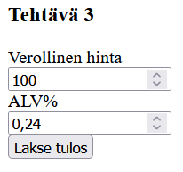

Harjoitukset 3
Harjoitus 3.1 - lomake
Laadi PHP:n avulla ohjelma, joka laskee ja tulostaa, montako litraa bensaa tietyllä rahamäärällä saa. Pyydä lomakkeen avulla käytössä oleva rahamäärä, voit pyytää bensiinin hinnan käyttäjältä tai käyttää sopivaa kovakoodattua arvoa. Huom! PHP käyttää desimaalipistettä pilkun sijaan.

Harjoitus 3.2 - lomake
Laadi ohjelma, joka pyytää lomakkeella syötteinä ostosten loppusumman ja asiakkaan antaman rahamäärän, ja laskee ja tulostaa, paljonko asiakas saa takaisin. Esimerkiksi jos maksat satasella alle satasen ostokset, paljonko saat takaisin.
Harjoitus 3.3 - lomake
Laadi ohjelma, joka pyytää lomakkeella tuotteen verollisen hinnan ja arvonlisäveroprosentin, ja laskee sekä tulostaa arvonlisäveron euromäärän sekä verottoman hinnan.

Harjoitus 3.4 - valintarakenne
Laadi ohjelma, joka pyytää lomakkeella syötteenä luvun väliltä 1 - 10.
Itse ohjelmassa arvo satunnaisluku väliltä 1 -10 (katso demo).
Jos luvut ovat samat, ohjelma tulostaa onnittelut.
Harjoitus 3.5 - valintarakenne
Laadi ohjelma, joka pyytää lomakkeella syötteenä viimeisen kokeen arvosanan ( 0 - 3).
Voit pyytää arvosanan valintaluettelon avulla.
Käytä ratkaisussa switch - case-rakennetta
<select name="arvosana"> <option value="0">0</option> <option value="1">1</option> <option value="2">2</option> <option value="3">3</option> </select>
Jos haluat tulostaa jonkin valitun arvon lomakkeelle, käytä attribuuttia "selected".
Jos luku on 1, ohjelma tulostaa kehoituksen parempaan työskentelyyn, jos 2 ohjelma kehottaa käyttäjää jatkamaan vähintään samaan malliin ja jos luku on 3, ohjelma kehuu käyttäjää. Jos luku ei ole mikään näistä, se pyytää antamaan luvun uudestaan.
Harjoitus 3.6 - valintarakenne
Laadi ohjelma, jossa käyttäjältä syöttää kahteen lomakekenttään luvut ja radionapin avulla tiedon siitä, haluaako hän tulostettavaksi suuremman vai pienemmän. Haluttu tulostetaan ruudulle.
Huom! html-lomakkeen radionappi tehdään seuraavasti:
suurempi: <input type="radio" name="valinta" value="suurempi"> pienempi: <input type="radio" name="valinta" value="pienempi">
Luettaessa viitataan arvoon:
if($_POST["valinta"]=="pienempi")
Voit tehdä toisen valituksi kirjoittamalla:
suurempi: <input type="radio" name="valinta" value="suurempi" checked="checked">
Harjoitus 3.7 - tietovisa
Laadi tietokoneaiheinen tietokilpailu (voit myös valita jonkin muun aiheen):
Kysymyksiä on 5, jokaisesta voi saada enintään 2 pistettä.
Lomakkeessa on tekstikenttiä, radionappeja ja valintaluetteloita (miksi ei valintaruutuja?). Pisteitä kertyy jokaisesta kysymyksestä, mutta vertailutaulukko on seuraava:
- pisteitä 1 - 3, arvosana on välttävä
- pisteitä 4 - 5, arvosana on tyydyttävä
- pisteitä 6 - 8, arvosana on hyvä
- pisteitä 9 - 10, arvosana on kiitettävä
Peli näyttää arviointitaulukon ja antaa käyttäjälleen hyvän palautteen. Tee palaute switch-case-rakenteen avulla.
Ulkoasu rakennetaan css:ää käyttäen, se voi antaa lisäpisteitä.